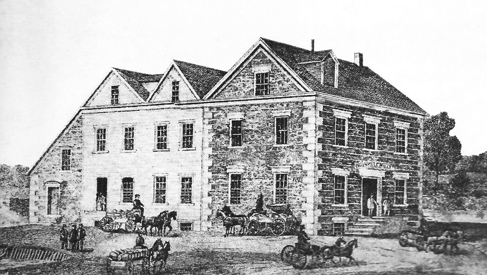
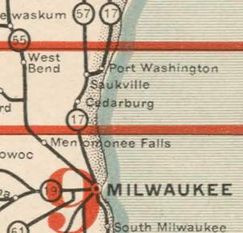

Municipalities
Mequon was established as a town in 1846. The Village of Thiensville separated from the town and incorporated in 1910.
Incorporated places like cities and villages can annex adjacent land if the people living on that land agree. Milwaukee annexed several areas this way. Thiensville was preparing to annex 600 acres from the Town of Mequon in 1957 during the post-war housing boom.To stop the annexation, residents of the town voted to incorporate the town as a city. The Village of Thiensville is surrounded by the City of Mequon.
Wisconsin designated Green Bay Road as State Trunk Highway 57 along with Highway 17 in 1921. Highway 57 was later rerouted to US 141/I-43, reducing traffic through Mequon and Thiensville.
